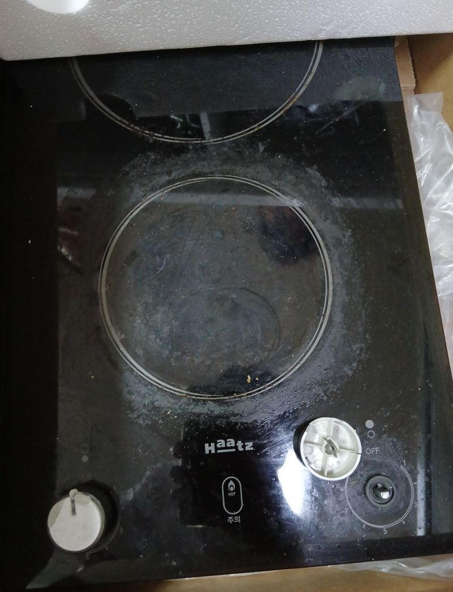
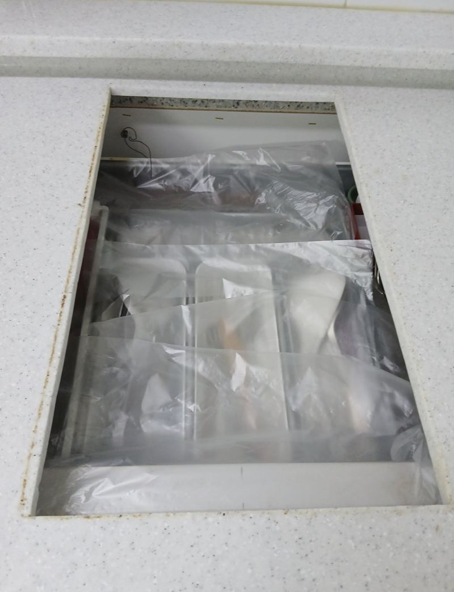
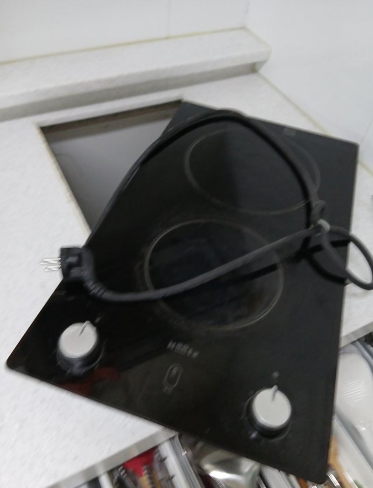
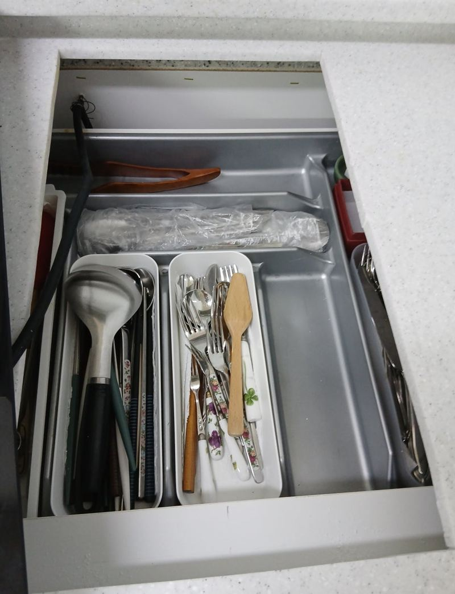
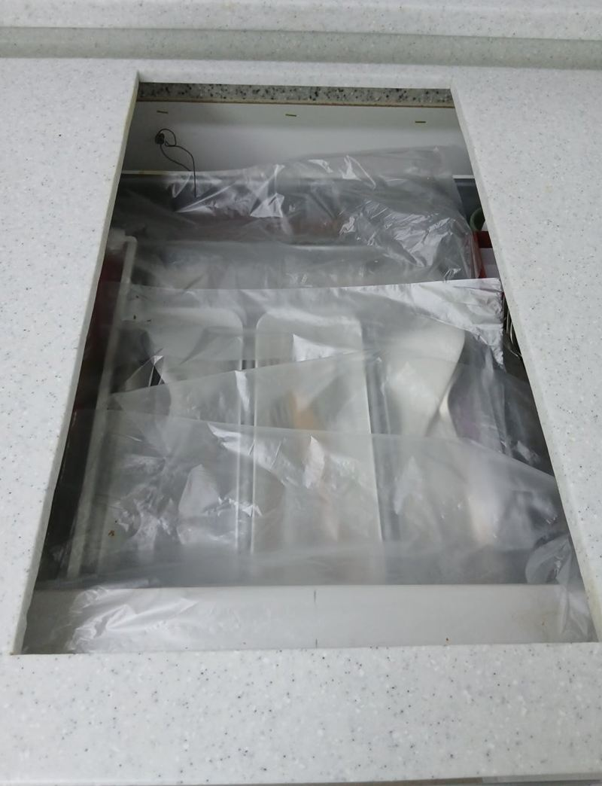
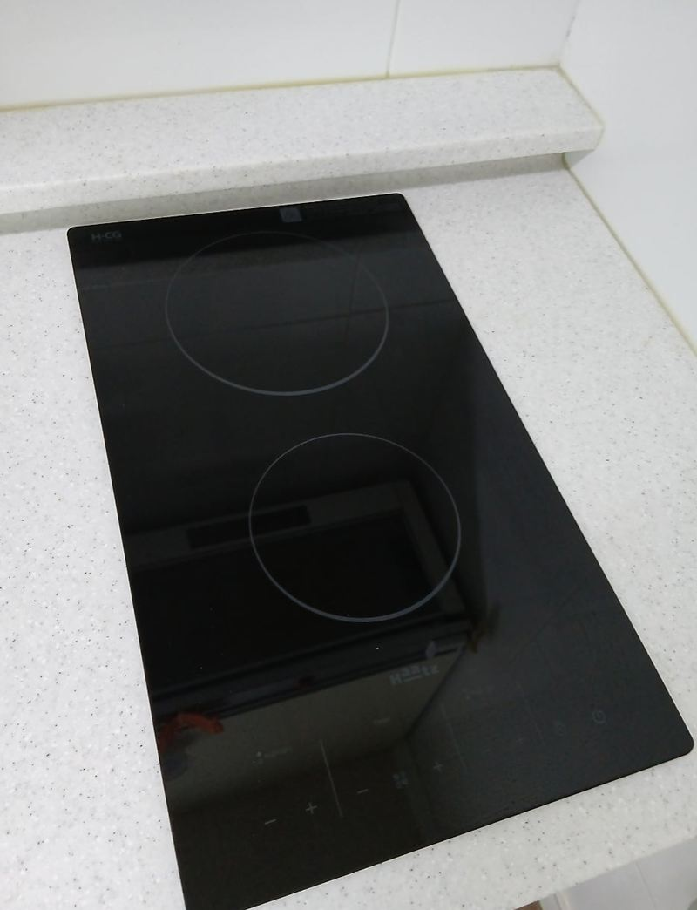
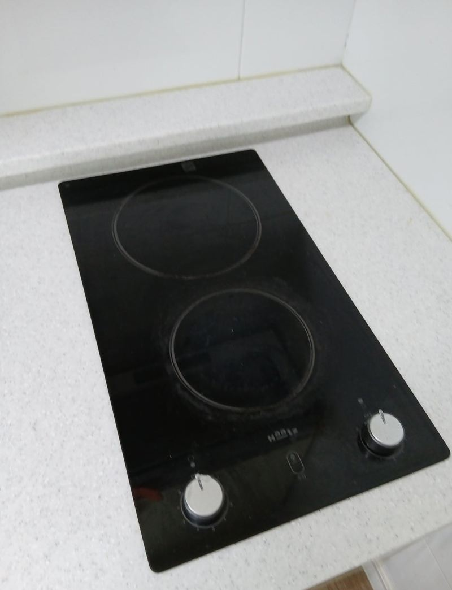

천안 하이라이트 불 꺼짐, 교체 방법과 순서

 교체 전교체 후
교체 전교체 후← 밀어서 전후 비교 →
"하이라이트가 갑자기 꺼지더니 이제 아예 안 켜져요. 다이얼도 부서졌어요." 천안 동남구 아파트였어요. 고객분은 인덕션보다 불 맛이 나는 하이라이트를 좋아해서 같은 종류로 바꾸길 원하셨어요. 보니 다이얼이 깨져 안쪽 스위치가 헐거워졌고, 불이 들어왔다 꺼지기를 반복해 내부 기판까지 상했을 가능성이 컸어요. 흰 상판을 보양한 뒤 옛 제품을 떼고, 묵은 기름때를 닦고, 새 제품에 맞춰 상판을 살짝 잘라 터치식 하이라이트를 앉혔어요.
| 현장 | 천안 동남구 아파트 주방, 흰 인조대리석 상판 |
|---|---|
| 증상 | 다이얼 파손, 불이 켜졌다 꺼짐 반복 후 작동 안 됨 |
| 한 일 | 상판 보양 → 기존 하이라이트 탈착 → 아래 기름때 청소 → 상판 컷팅 → 다시 청소·실리콘 잔여물 정리 → 터치식 설치·전원 연결 → 작동 확인 → 폐제품 수거 |
| 바꾼 점 | 다이얼식에서 터치식으로 |
고칠까, 바꿀까
하이라이트가 아예 안 켜지면 퓨즈나 전원부만 바꾸면 되는 경우도 있어요. 그런데 이 집처럼 다이얼이 부서진 채 불이 켜졌다 꺼지기를 반복했다면, 그동안 안쪽 기판이 손상됐을 가능성이 커요. 부품을 하나씩 갈다 보면 수리비가 새 제품에 가까워지기도 해서 교체로 정했어요.
| 상태 | 대개 맞는 쪽 |
|---|---|
| 오래 안 됐고 한 구만 안 됨 | 부품 수리 먼저 확인 |
| 조작부 파손 + 켜졌다 꺼짐 반복 | 교체 |
| 상판 유리에 금 | 교체 |
하이라이트 교체 순서
상판 보양
흰 인조대리석 상판은 작은 흠집이나 먼지도 잘 보여요. 보양 테이프와 덮개로 주변을 먼저 막았어요.
탈착과 청소
옛 제품을 들어내니 아래에 기름때와 먼지가 눌어붙어 있었어요. 새 제품을 그냥 올리지 않고 세정제로 깨끗이 닦았어요. 이물질이 남으면 열이 고르게 빠지지 못해 고장의 원인이 돼요.


구멍 맞추기
새 제품이 기존 구멍과 크기가 조금 달라, 상판을 살짝 잘라 정확히 맞췄어요.


설치와 작동 확인
새 하이라이트를 앉히고 전원을 연결해 모든 구에서 불이 켜지고 온도가 조절되는지 봤어요. 주변을 다시 청소하고 옛 제품은 가져가 처리했어요.


새 제품 크기가 안 맞을 때
같은 2구라도 회사와 모델마다 가로·세로 크기가 조금씩 달라요. 새 제품이 구멍보다 크면 상판을 넓혀야 하고, 작으면 틈이 생겨 메워야 해요. 인조대리석은 열과 진동에 약해 잘못 자르면 금이 갈 수 있어서, 먼지가 날리지 않게 청소기와 덮개를 함께 쓰며 조금씩 잘랐어요.
고객분은 "다른 데선 교체만 하고 가던데 청소까지 해 주는 건 처음 봤다"며 만족해하셨어요.
교체 전에 알려 주시면 좋은 것
- 지금 제품 크기윗면 가로·세로를 재 주시면 맞는 제품을 고르기 쉬워요.
- 원하는 종류하이라이트, 인덕션, 하이브리드 중 쓰고 싶은 걸 알려주세요.
- 아래 공간서랍인지 하부장 문인지에 따라 설치 방법이 달라요.
하이라이트 교체 질문
하이라이트를 인덕션으로 바꿀 수 있나요?
구멍 크기와 전기 용량이 맞으면 가능해요. 인덕션 전용 냄비가 필요해요.
터치식이 더 좋은가요?
온도를 세밀하게 맞추고 잔열 표시, 자동 꺼짐 같은 안전 기능이 있어 편해요.
상판을 자르면 티가 나나요?
자른 자리는 제품 테두리에 덮여 거의 보이지 않아요.
3구로 늘릴 수도 있나요?
상판 폭과 아래 서랍·하부장 구조를 보고 가능한지 판단해요.
3구 제품으로 바꾸면 차단기가 떨어지지 않나요?
화구가 늘면 전기를 더 써요. 집 전기 용량과 배선을 보고 맞는 제품을 골라요.
쓰던 제품은 버려 주나요?
요청하시면 떼어 낸 제품을 가지고 나가요.
가스레인지에서 바꿀 수도 있나요?
가스 배관을 막고 전원을 끌어와야 해요. 상판 구멍 크기도 다시 맞춰요.
다른 인덕션·하이라이트 현장
지금 제품 윗면과 상판 전체 사진을 보내 주세요.
전화 상담 010-4517-9872